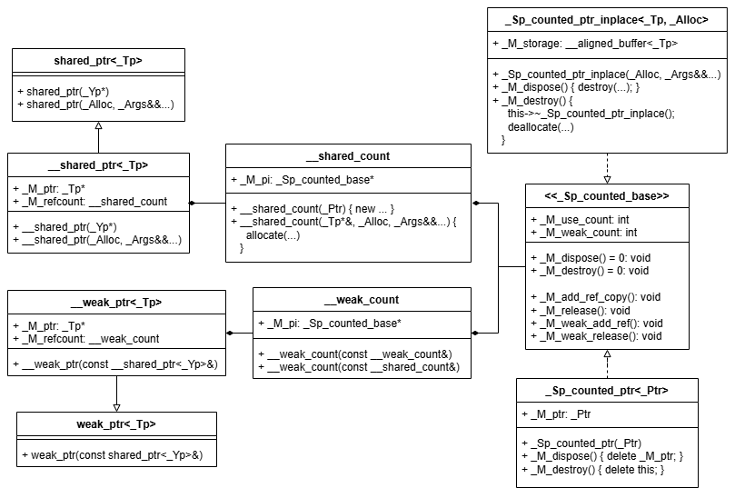

这篇文章的起因是我在知乎上看到了这个问题的回答C++构造shared_ptr为什么推荐使用make_shared，而非new。
结合之前的一些源码阅读，形成了这篇文章，总结了智能指针以下的细节：
- 类间关系
- 计数器原理
shared_ptr(*)与make_shared两种构造方法的区别
类间关系
这里我们先着眼于 shared_ptr 与 weak_ptr，很多文章都解析过他们的使用原则：shared_ptr 持有资源，weak_ptr 仅持有访问权。

粗略的讲，两种智能指针持有了资源指针及相应的计数器，实现了对资源生命周期的管理。
这里的两种用于计数的类：__shared_count 和 __weak_count 并不直接进行计数，也不直接修改计数器 _Sp_counted_base 内部的值，是通过自身的构造与析构间接修改的。当我创建一个 weak_ptr 的同时，一个 __weak_count 对象也被创建，其构造函数内部增加了弱引用计数。其他情况同理相似。
计数器原理
两种计数类 __shared_count 和 __weak_count 都持有指向了计数器 _Sp_counted_base 的指针 _M_pi，管理同一对象的不同智能指针，都分别持有指向了同一个计数器的指针。被管理资源与计数器是一对一的。
计数器 _Sp_counted_base 类包含了 _M_use_count 和 _M_weak_count 成员，分别统计引用和弱引用计数；实现了一系列用于修改（弱）引用计数的接口；声明了用于资源回收的 _M_dispose() 和 _M_destroy 虚函数。
_M_dispose() 函数在引用计数归零时被调用，用于释放被智能指针管理的资源。
_M_destroy() 函数在弱引用计数归零时被调用，用于释放计数器资源。
需要注意的是，在上面的理论中，被管理资源与计数器资源的释放是分离的。这也就引申出知乎上的那篇回答。
shared_ptr(*) 与 make_shared 两种构造方法的区别
源码中内存分配部分较复杂，为方便展示与理解，我进行了适当的有语法错误的修改。
shared_ptr(*)
shared_ptr(*) 的构造如下面代码所示：
1 | auto _p = std::shared_ptr<int>(new int(3)); |
其匹配的构造函数的入参是堆上资源的指针。为什么要强调在堆上呢？因为对于以这种方式构造的 shared_ptr 来说，释放被管理资源时，会调用 delete 运算符，析构对象并回收内存。
1 | template <typename _Tp, _Lock_policy _Lp> class __shared_ptr { |
对于这种用法，shared_ptr 的计数器及资源组织方式就是最初学者的方式：计数器与被管理对象分离，智能指针仅申请计数器 _Sp_counted_ptr 所需的内存，而被管理对象的内存独立于智能指针，在资源释放时由编译器回收。
回到代码中，__shared_count 在构造函数中直接 new 一个计数器 _Sp_counted_ptr 即可，对应的，其 _M_destroy() 函数的实现仅需调用计数器自身的 delete 运算符。
1 | template <_Lock_policy _Lp> class __shared_count { |
make_shared
make_shared 的构造如下面代码所示：
1 | auto _p = std::make_shared<int>(3); |
make_shared 作为 shared_ptr 的友元函数，调用了前面类图中 shared 系列的第二个构造函数。
1 | template <typename _Tp, _Lock_policy _Lp> class __shared_ptr { |
对于这种用法，shared_ptr 需要自己创建管理对象，为了减少内存多次分配带来的性能开销，__shared_count 构造函数将一次性申请用于存储被管理对象和计数器大小的内存。由于被管理对象与计数器在同一块内存上，因此被管理对象的析构与内存回收就必须分离开来，在资源回收的 _M_dispose() 函数中仅析构对象，在计数器回收时析构计数器并回收全部内存。
在 __shared_count 构造函数及其相关的代码中，开发人员使用了 allocator 分离对象的构建/析构与内存的分配/回收。
相关代码如下：
1 | template <_Lock_policy _Lp> class __shared_count { |
总结
shared_ptr(*) 用法产生两次内存分配，make_shared 仅需要一次内存分配， 前者消耗更多的内存与系统调用时间，并且有造成内存碎片的可能， 后者由于连续的内存存储，在通过指针访问（箭头运算符）其中成员时，可以有更好的缓存优化。
当引用计数为零时，shared_ptr(*) 随机释放掉被管理对象的内存，但对 make_shared 而言，直到弱引用计数也为零，这些内存才被释放，存在隐藏的“内存泄漏”问题。